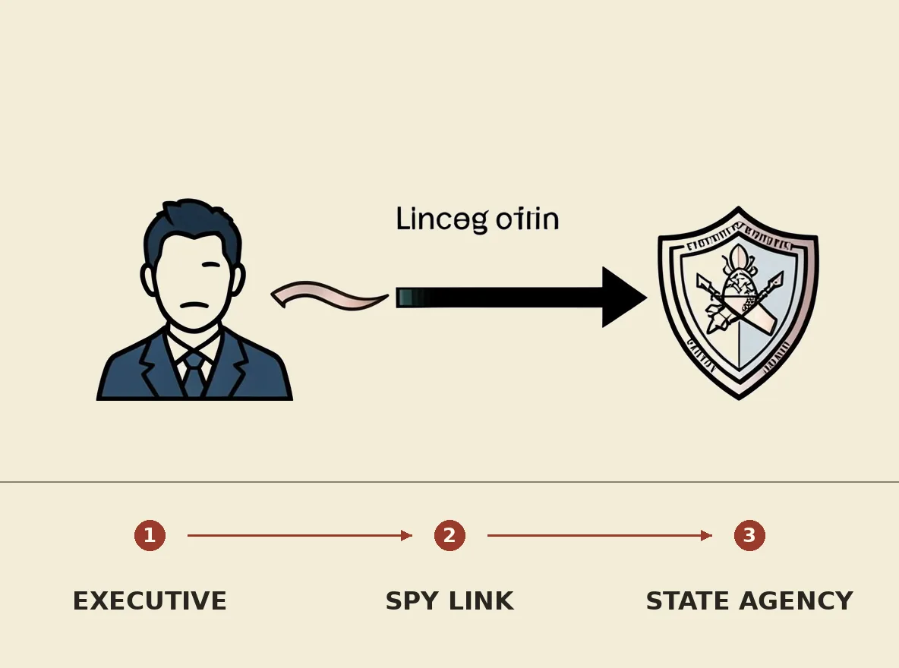

A US intelligence memo claims that Megaspeed executive Alice Huang was recruited by China's Ministry of State Security to spy on Nvidia CEO Jensen Huang. The memo, reported by The New York Times and Financial Times, also alleged a romantic relationship between the two, though Nvidia stated Jensen Huang's interactions were "not unusual." This development highlights ongoing concerns about foreign intelligence efforts targeting key figures in the critical technology sector and potential vulnerabilities in the supply chain for advanced chips.